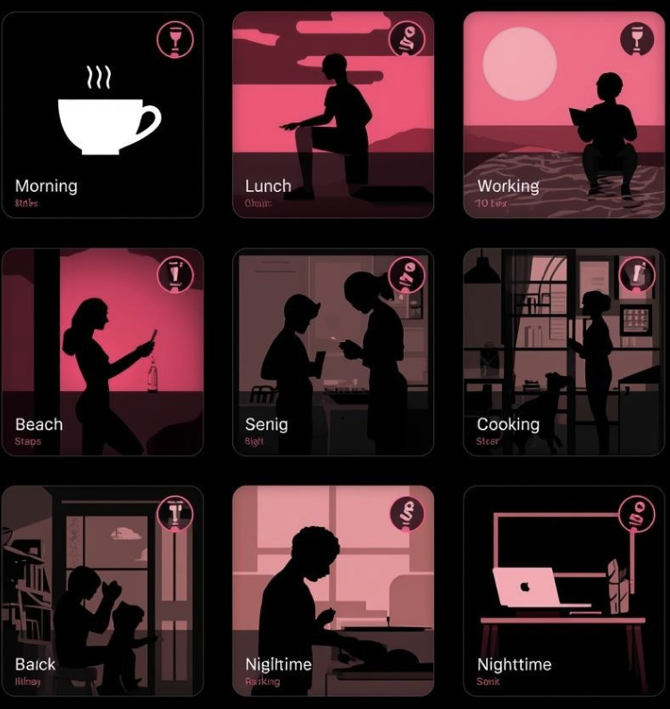

<codemom>
코드맘이만든앱
06 /
08
그래서 진짜 만들었어요.
JANJAN
A
diary
for the quiet days
Redesign · in progress

흘려보내던
잔잔한 하루를
기록
하게 만드는 앱.
기념일만 사진 찍지 마세요. 아기가 처음 웃은 목요일,
아무 일 없던 화요일 오후 —
그게 진짜 하루거든요.
CapCut
40분
→
JANJAN
30초